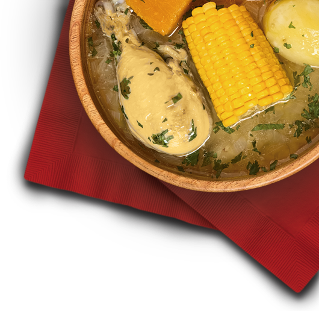

¿Quienes Somos?

¿QUIENES SOMOS?
Somos una empresa consolidada, en el Valle del Cauca, productora y comercializadora de alimentos nutritivos, con proyección y reconocimiento nacional, Pollos El Bucanero S.A. nació en el año de 1986 en el municipio de Candelaria, resultado del emprendimiento de Néstor Cortés, un arriero paisa que tuvo la visión de producir alimentos de calidad para miles de familias del Suroccidente colombiano.
La compañía inició con una base de 5000 pollos y hoy tiene una capacidad instalada de producción de 9 millones de aves por ciclo de 70 días, organizadas en 171 granjas distribuidas en Cauca y Valle de Cauca.
Ese sueño se consolida 28 años después con una empresa sólida reconocida a nivel regional, como a nivel nacional; con una amplia infraestructura tecnológica, una constante de innovación y transformación, y un equipo de 3.500 colaboradores que tienen un alto compromiso y sentido de pertenencia.
Este vertiginoso crecimiento es el resultado del tesón y la dedicación con la que se trabaja desde los inicios de la organización.
Pollos Bucanero es hoy una de las empresas referentes del sector avícola, con una gran infraestructura tecnológica para elevar sus procesos y convertirse en una compañía de categoría mundial haciendo frente a la globalización de la economía.
MISION
Contribuimos con la nutrición, rentabilidad y desarrollo económico, social y ambiental de la región. Creamos valor y hacemos la diferencia en beneficio de los accionistas, clientes y colaboradores.
VISION
Ser reconocidos como los aliados más importantes en todos los sectores sociales y económicos, por la rentabilidad, desarrollo y nutrición que aseguramos en la sociedad.
POLITICA DE CALIDAD
En Pollos el Bucanero S.A. , satisfacemos las expectativas de nuestros clientes, con productos de alto valor nutricional, mejoramos constantemente nuestros procesos internos, promovemos el desarrollo y seguridad integral de nuestros colaboradores, cumplimos con los requisitos legales y reglamentarios, garantizando la sostenibilidad del negocio.